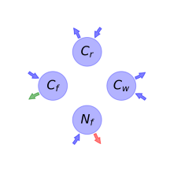

General Overview

This report is the result of the use of the python package bgc_md, as means to translate published models to a common language. The underlying yaml file was created by Verónika Ceballos-Núñez (Orcid ID: 0000-0002-0046-1160) on 15/3/2016.
About the model
The model depicted in this document considers carbon allocation with a process based approach. It was originally described by DeAngelis, Ju, Liu, Bryant, & Gourley (2011).
Space Scale
global
Available parameter values
Information on given parameter sets
| Original dataset of the publication |
@DeAngelis2011TheoreticalEcology |
state_variables
| \(C_{f}\) |
Foliage carbon content per unit ground area at equilibrium |
\(g\cdot m^{-2}\) |
| \(C_{r}\) |
Fine root carbon |
\(g\cdot m^{-2}\) |
| \(C_{w}\) |
Carbon in woody tissue |
\(g\cdot m^{-2}\) |
| \(N_{f}\) |
Nitrogen in foliage |
\(g\cdot m^{-2}\) |
| \(N_{pore}\) |
Soil pore water nutrient pool |
\(gN\cdot g^{-1}water\) |
additional_variables
| \(F_{i}\) |
Herbivore functional response |
- |
\(gN\cdot m^{-2}\cdot day^{-1}\) |
| \(N_{r}\) |
Nitrogen in roots |
- |
- |
| \(v_{f}\) |
N:C ratio in foliage |
\(v_{f}=\frac{N_{f}}{C_{f}}\) |
- |
| \(v_{r}\) |
N:C ratio in fine roots |
\(v_{r}=\frac{N_{r}}{C_{r}}\) |
- |
| \(N_{w}\) |
Nitrogen in wood |
- |
- |
| \(v_{w}\) |
N:C ratio in wood |
\(v_{w}=\frac{N_{w}}{C_{w}}\) |
- |
| \(v_{m}\) |
N:C ratio for reproductive propagules |
- |
- |
photosynthetic_parameters
| \(G_{0}\) |
Maximum possible primary production, assuming all light is captured and photosynthesizing material (foliage) is operating optimally. |
- |
- |
| \(b_{f}\) |
Converts carbon per square meter to LAI |
- |
- |
| \(k_{f}\) |
Foliage light-extinction (Beer-Lambert law) coefficient |
- |
- |
| \(v_{0}\) |
Half-saturation constant for the effect of foliar nitrogen concentration on primary production |
- |
- |
| \(G\) |
Net carbon production or growth per unit time |
\(G=\frac{G_{0}\cdot v_{f}\cdot\left(1 - e^{- C_{f}\cdot b_{f}\cdot k_{f}}\right)}{v_{0} + v_{f}}\) |
\(gC\cdot m^{-2}\cdot day^{-1}\) |
nutrient_uptake
| \(g_{N}\) |
Maximum possible nutrient uptake rate |
- |
- |
| \(k_{N}\) |
Half-saturation constant for uptake of soil porewater N |
- |
- |
| \(k_{r}\) |
Coefficient analogous to k\(_{f}\) |
- |
- |
| \(b_{r}\) |
Coefficient of fine root length per unit C |
- |
- |
| \(U\) |
Nutrient uptake rate of plant available nutrient. Saturated response of uptake to soil porewater concentration is assumed |
\(U=\frac{N_{pore}\cdot g_{N}\cdot\left(1 - e^{- C_{r}\cdot b_{r}\cdot k_{r}}\right)}{N_{pore} + k_{N}}\) |
\(gN\cdot m^{-2}\cdot day^{-1}\) |
allocation_coefficients
| \(s_{f}\) |
Allocation ratio of wood to foliage |
- |
| \(s_{r}\) |
Allocation ratio of wood to fine roots |
- |
| \(\eta_{f}\) |
Allocation fraction to foliar biomass |
- |
| \(\eta_{r}\) |
Allocation fraction to roots biomass |
- |
| \(\eta_{w}\) |
Allocation fraction to wood (in stem, branches and large structurl roots) biomass |
\(\eta_{w}=\eta_{f}\cdot s_{f} +\eta_{r}\cdot s_{r}\) |
| \(\eta_{m}\) |
Allocation fraction to reproduction |
- |
| \(\eta_{d}\) |
Allocation fraction to plant defense |
\(\eta_{d}=-\eta_{f} -\eta_{m} -\eta_{r} -\eta_{w} + 1\) |
cycling_rates
| \(\gamma_{f}\) |
Foliage senescence rate |
\(day^{-1}\) |
| \(\gamma_{r}\) |
Roots senescence rate |
\(day^{-1}\) |
| \(\gamma_{w}\) |
Wood senescence rate |
\(day^{-1}\) |
components
| \(x\) |
vector of states for vegetation |
\(x=\left[\begin{matrix}C_{f}\\C_{r}\\C_{w}\\N_{f}\end{matrix}\right]\) |
| \(u\) |
scalar function of photosynthetic inputs |
\(u=G\) |
| \(b\) |
vector of partitioning coefficients of photosynthetically fixed carbon |
\(b=\left[\begin{matrix}\eta_{f}\\\eta_{r}\\\eta_{w}\\-\eta_{m}\cdot v_{m} -\eta_{r}\cdot v_{r} -\eta_{w}\cdot v_{w} +\frac{U}{G}\end{matrix}\right]\) |
| \(A\) |
matrix of senescence (cycling) rates |
\(A=\left[\begin{matrix}-\frac{F_{i}}{N_{f}} -\gamma_{f} & 0 & 0 & 0\\0 & -\gamma_{r} & 0 & 0\\0 & 0 & -\gamma_{w} & 0\\0 & 0 & 0 & -\frac{F_{i}}{N_{f}} -\gamma_{f}\end{matrix}\right]\) |
| \(f_{v}\) |
the righthandside of the ode |
\(f_{v}=u b + A x\) |
Pool model representation

Figure 1: Pool model representation
\(C_{f}: \frac{G_{0}\cdot N_{f}\cdot\eta_{f}\cdot\left(1 - e^{- C_{f}\cdot b_{f}\cdot k_{f}}\right)}{C_{f}\cdot\left(v_{0} +\frac{N_{f}}{C_{f}}\right)}\)
\(C_{r}: \frac{G_{0}\cdot N_{f}\cdot\eta_{r}\cdot\left(1 - e^{- C_{f}\cdot b_{f}\cdot k_{f}}\right)}{C_{f}\cdot\left(v_{0} +\frac{N_{f}}{C_{f}}\right)}\)
\(C_{w}: \frac{G_{0}\cdot N_{f}\cdot\left(1 - e^{- C_{f}\cdot b_{f}\cdot k_{f}}\right)\cdot\left(\eta_{f}\cdot s_{f} +\eta_{r}\cdot s_{r}\right)}{C_{f}\cdot\left(v_{0} +\frac{N_{f}}{C_{f}}\right)}\)
\(N_{f}: \frac{G_{0}\cdot N_{f}\cdot\left(1 - e^{- C_{f}\cdot b_{f}\cdot k_{f}}\right)\cdot\left(\frac{C_{f}\cdot N_{pore}\cdot g_{N}\cdot\left(1 - e^{- C_{r}\cdot b_{r}\cdot k_{r}}\right)\cdot\left(v_{0} +\frac{N_{f}}{C_{f}}\right)}{G_{0}\cdot N_{f}\cdot\left(1 - e^{- C_{f}\cdot b_{f}\cdot k_{f}}\right)\cdot\left(N_{pore} + k_{N}\right)} -\eta_{m}\cdot v_{m} -\frac{N_{w}\cdot\left(\eta_{f}\cdot s_{f} +\eta_{r}\cdot s_{r}\right)}{C_{w}} -\frac{N_{r}\cdot\eta_{r}}{C_{r}}\right)}{C_{f}\cdot\left(v_{0} +\frac{N_{f}}{C_{f}}\right)}\)
Output fluxes
\(C_{f}: \frac{C_{f}\cdot\left(F_{i} + N_{f}\cdot\gamma_{f}\right)}{N_{f}}\)
\(C_{r}: C_{r}\cdot\gamma_{r}\)
\(C_{w}: C_{w}\cdot\gamma_{w}\)
\(N_{f}: F_{i} + N_{f}\cdot\gamma_{f}\)
References
DeAngelis, D. L., Ju, S., Liu, R., Bryant, J. P., & Gourley, S. A. (2011). Plant allocation of carbon to defense as a function of herbivory, light and nutrient availability. Theoretical Ecology, 5(3), 445–456. http://doi.org/10.1007/s12080-011-0135-z